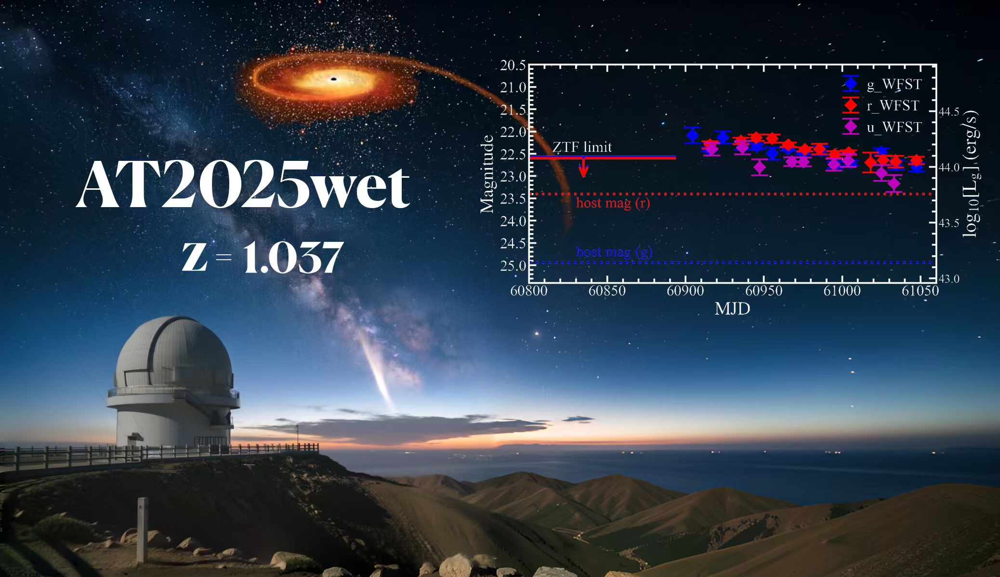
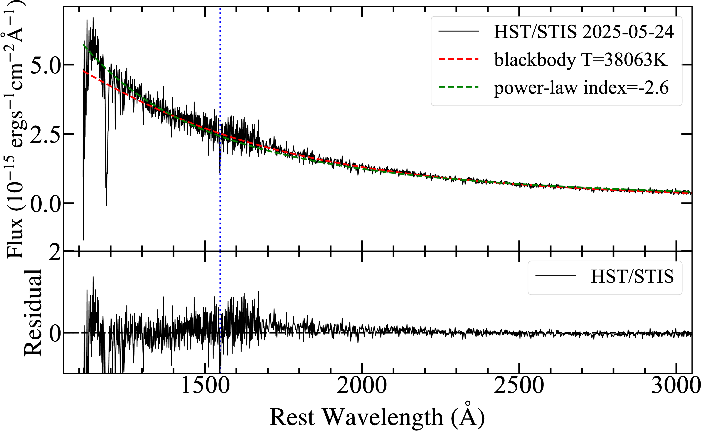
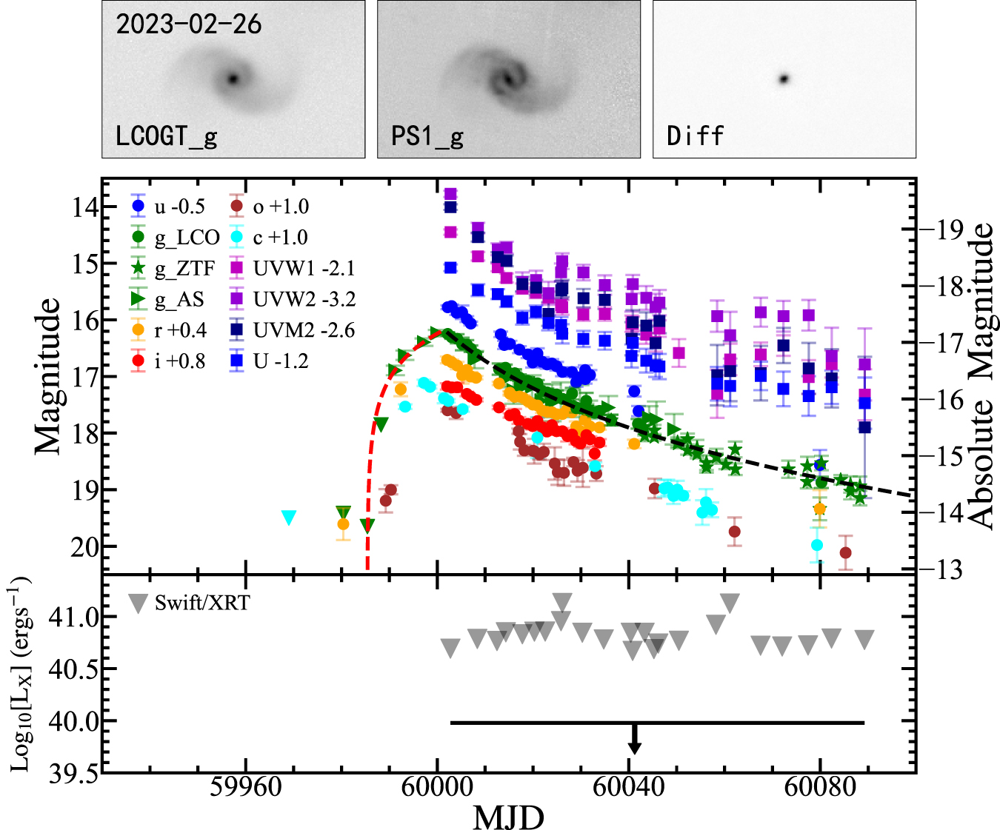
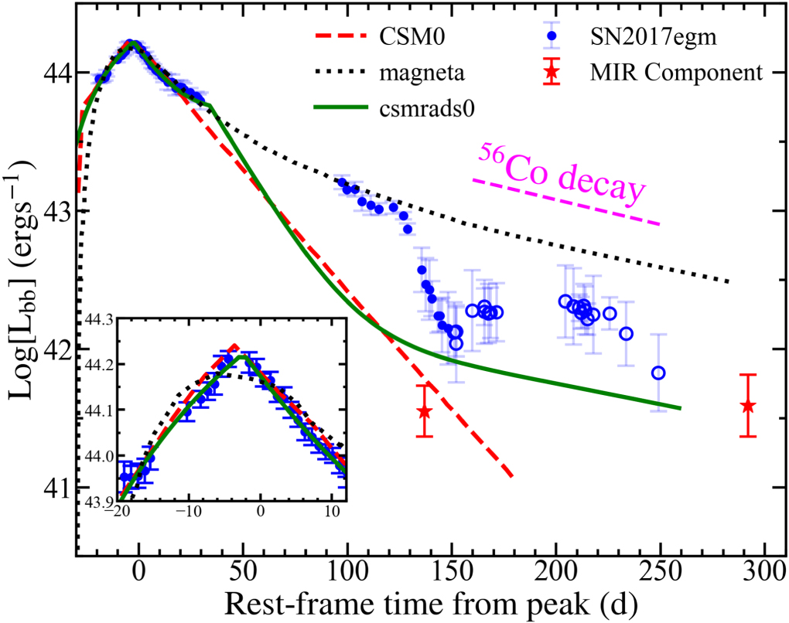

First-author and featured works on optical transients and tidal disruption events
The highest-redshift non-jetted TDE known to date, discovered by the Wide Field Survey Telescope — ApJL, 1004, L10, 2026 DOI
We report the discovery of the tidal disruption event WFST250820mmsw/AT2025wet by the 2.5-meter Wide Field Survey Telescope (WFST). It shows a blue nuclear flare with a g-band peak magnitude of ~22, about 3 magnitudes brighter than its host galaxy. Its redshift is accurately determined to be z = 1.037 from host galaxy absorption lines.
A Keck/LRIS spectrum taken near the optical peak reveals a featureless blue continuum with no discernible emission lines. Blackbody fits to the multiband SED yield a constant temperature of ~19,000 K and a peak luminosity of ~8.3 × 1044 erg s−1, with a host stellar mass of ~1011.2 M☉ and a central black hole of ~108 M☉, and no evidence of prior AGN activity.

Ultraviolet spectral evidence for Ansky as a featureless TDE with QPEs — ApJL, 994, L16, 2025 DOI
X-ray quasi-periodic eruptions (QPEs) are rare and enigmatic phenomena increasingly connected to tidal disruption events (TDEs), yet the recently discovered QPEs in ZTF19acnskyy ("Ansky") had appeared to be linked to an active galactic nucleus rather than a TDE. To investigate its nature, we obtained a timely ultraviolet (UV) spectrum with HST.
The HST UV spectrum reveals a featureless, TDE-like spectrum devoid of broad optical or UV emission lines, with a steep UV continuum (power-law index −2.6) that aligns more closely with TDEs than with AGNs. Compared with other featureless TDEs, Ansky shows a lower blackbody luminosity (~1043 erg s−1) and longer rise and decay timescales — a distinct TDE subclass. Its position is consistent with the galactic center, disfavoring an offset intermediate-mass black hole; we propose the tidal disruption of a post-main-sequence star by a typical supermassive black hole.

Discovered in the nearby star-forming galaxy NGC 3799 — ApJL, 952, L35, 2023 DOI
We report the discovery of a faint optical tidal disruption event in the nearby star-forming galaxy NGC 3799. Its identification is based on its position at the galaxy nucleus, a light curve declining as t−5/3, a blue continuum with an almost constant blackbody temperature of ~12,000 K, and broad (~15,000 km s−1) Balmer lines with characteristic He ii 4686 Å emission.
The light curve peaked at an absolute magnitude of −17.16 mag in g-band with a peak bolometric luminosity of ~4.6 × 1042 erg s−1 — making it the faintest TDE discovered to date. At z = 0.01107 (luminosity distance 47.8 Mpc), it is also the closest optical TDE known. Tight Swift/XRT limits imply that many faint TDEs remain to be found by deep surveys such as LSST and WFST.

Precursor activity and light-curve features of a superluminous supernova — ApJ, 949, 23, 2023 DOI
Superluminous supernovae (SLSNe) are among the most energetic explosions in the universe, and the origin of their light-curve bumps remains debated. SN 2017egm (Gaia17biu) in NGC 3191 is one of the closest hydrogen-deficient (helium-rich) superluminous supernovae, making it an unusually well-observed target that shows multiple bumps in its light curve with clear precursor activity.
We model the multi-band light curves and spectra, interpreting the bumps as episodes of continued energy injection — possibly from a magnetar or from interaction with circumstellar material. This provides insight into the diversity of engines powering the most extreme supernova explosions.
